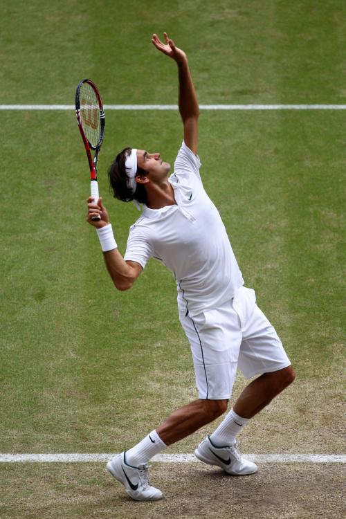

网球运动是一种球类运动，通常在两个单打球员或两对组合之间进行。球员在网球场上隔着球网用网球拍击打网球。
网球运动的由来和发展可以用四句话来概括：孕育在法国，诞生在英国，开始普及和形成高潮在美国，现在盛行全世界，被称为世界第二大球类运动。
现代网球运动诞生于19世纪的英国伯明翰，最初被称为是“草地网球”，此后网球运动得到了飞速的发展，1877年首个大满贯赛温布尔登锦标赛创立，随后是1881年的美网、1891年的法网以及1905年的澳网，即网球四大满贯赛事。
罗杰·费德勒，1981年8月8日出生于瑞士巴塞尔，瑞士男子职业网球运动员（1998年转为职业），以全面稳定的技术、华丽积极的球风、绅士优雅的形象而著称。众多评论家、现役与退役的选手认为费德勒为史上最伟大球员之一。费德勒不仅在网球领域取得成功，亦在慈善和商业领域活跃。
